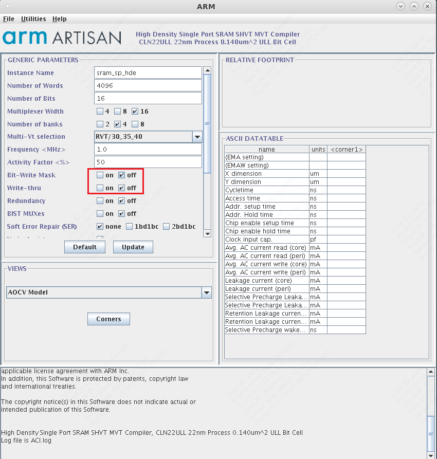
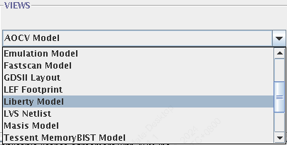
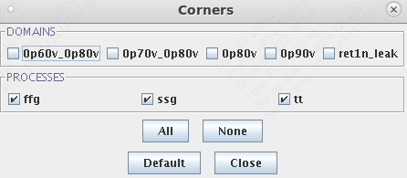
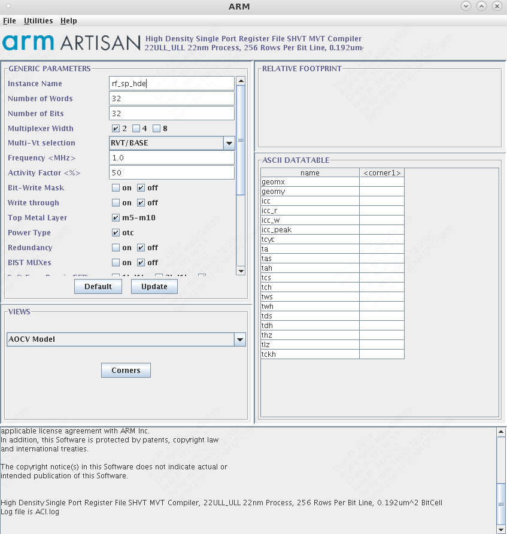

Genus Workflow
- 此处介绍了Cadance Genus的数字综合流程，主要涉及到一些基本的脚本修改。
SRAM/Register File替换
由于许多数字模块中依赖于较大规模的寄存器堆/SRAM高速缓存，这些模块需要替换成专门的IP核，而不是使用RTL代码直接综合，从而可以显著减小模块面积。
主要用到的是ARM提供的SRAM Compiler和Register File Compiler
在./scripts/sram/文件夹下新建文件夹，并在该文件夹下启动SRAM Compiler/Register File Compiler，用于存放生成的文件。
SRAM Compiler
常规使用的是ARM提供的High Density Single Port SRAM SHVT MVT Compiler

部分常见的设置选项如下：
* Number of Words: SRAM的深度
* Number of Bits: SRAM的宽度
* Multiplexer Width, Number of Banks会影响最终SRAM的形状，也受到数据深度与宽度的影响。在某些深度与宽度的组合下，可能无法找到一个合法的MUX与Bank数组合，在这种情况下可以考虑将SRAM的宽度减半，分开生成。
* Frequency保持与整体设计的时钟周期一致。
* Bit Write Mask允许你在写入数据时选择性地更新特定的位，而不用更新整个字（Word）。为此我们需要 生成单独的掩码（Mask）信号来控制在每次写入SRAM时想要对哪几位进行操作。
在我们自己的模块中使用SRAM Compiler生成的单元，需要生成相应的文件。
* 在views部分选择LEF Footprint, LVS Netlist, Liberty Model, Verilog Model

* 在Corners菜单中勾选所有的domain与processes，以保证生成综合报告的完整性。

Register File Compiler
与SRAM Compiler流程类似。

RTL数字综合
-
修改工艺路径
./scripts/design_input_macro.tcl中修改PDK和标准库的路径。在之后的综合/后端流程中也会涉及到使用的工艺库，需要根据情况进行调整。tcl set std_lib MY_STD_LIBstd_lib可选：tcbn22ullbwp30p140lvttcbn22ullbwp30p140hvttcbn22ullbwp7t30p140lvttcbn22ullbwp7t30p140hvttcbn22ullbwp7t40p140ehvttcbn22ullbwp7t40p140hvt
-
添加RTL
- 添加RTL代码至
./rtl/ - 在
./rtl/srcs.tcl中添加文件名tcl read_hdl ../rtl/MY_MODULE_1.v read_hdl ../rtl/MY_MODULE_2.v
- 添加RTL代码至
-
定义顶层模块
- 在
./scripts/core_config.tcl中定义需要综合的顶层模块名称tcl set rm_core_top MY_TOP_MODULE
- 在
-
定义时钟周期
- 在
./scripts/design_input_macro.tcl中tcl set rm_clock_period MY_CLOCK_PERIOD - 单位为ns
- 在
-
添加SRAM/Register File所需的文件
- 将所需要的SRAM LIB文件生成并放置于
./sram/my_sram_lib_files/文件夹中， - 在
./scripts/design_input_macro.tcl中添加综合所需要的SRAMtcl set sram_insts [concat $MACROname_rams \ "my_sram_lib_files" \ ]
- 将所需要的SRAM LIB文件生成并放置于
-
添加额外的Macro（例如CIM，子模块）所需的文件
- 添加
LIB文件。LIB文件包括各个模块的时序信息，对于每一个Corner都会生成相应的LIB文件。- 对于Genus Synthesis，
LIB文件是必须的。tcl set ff_0p88v_m40c_libs [list ${base_lib_dir}/${base_ff_0p88v_m40c_lib}.lib ${io_lib}ffg08ppv2p75vm40c.lib \ /path/to/foundry/lib/files \ /work/home/my_project/tapeout/lib_files/CIM_ff_0p88v_m40c.lib \ ]
- 添加
LEF文件。LEF整体模块各层金属的尺寸，以及各个管脚的大小和位置。- 对于后续Innovus Implementation，需要在
./scripts/design_inputs_macro.tcl添加LEF文件。 - 对于Genus Synthesis，可以暂时不添加
LEF文件，但是这样的话Genus综合报告中不会报该Macro的面积。为了能够在后端之前大概估计设计的面积，建议在综合前添加LEF。 ```tcl set rm_lef_reflib [concat ${rm_lef_tech_file} ${rm_foundry_liv_dirs}/Back_End/lef/${std_lib}_110a/lef/${std_lib}.lef \ /path/to/foundry/lef/files \ /work/home/my_project/tapeout/lef_files/CIM.lef \ ]
- 添加
-
启动综合
b make genus_syn
-
检查生成文件
./data/MY_TOP_MODULE-genus.v：生成的gate level netlist./data/func-genus.sdc：生成的SDC./logs/genus_synthesis.log：综合过程中的log文件，可以查找Error,Warning等关键词检查流程是否有误。./reports/genus/func_tt_0p90v_025c_timing.rpt：tt corner的timing report，可以查找VIOLATED关键词检查时序是否满足。类似地，可以查看ss corner的timing report。./reports/genus/area.rpt：生成的面积报告
Gate-level的数字仿真
This part is under development
- 进行带有SDF的仿真，确保生成的gate level netlist逻辑正确
- 需要在testbench中将SDF文件annotate
verilog initial begin $sdf_annotate("../models/sdf/adder_8bit.sdf", ADDER,,, "MAXIMUM", "1.6:1.4:1.2", "FROM_MTM"); b make compile_gateb make verdi打开波形图